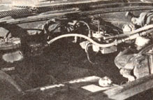

Gill, Massachusett's own Leland Barber isn't just "gassing"when he says...
With all the brouhaha about the price of gasoline thesedays-and the very real concern over its availability through thecoming years-it seems senseless to waste time "beating a deadhorse" when there are fuel alternatives just waiting to beuncovered or improved upon.
One such substitute-ethyl alcohol has been used before and isnow being "rediscovered". Another-hydrogen-is also quitefeasible, and is presently the object of several researchprograms being carried out by private industry.
But I'm convinced that I've come up with my ownanswer to the petroleum "pickle" we're presently in . . .and-since I'm a welder by trade-the solution has literally beenat my fingertips for nearly 30 years: acetylene!
Of course, the details of my unique system weren't worked outovernight. In fact, the acetylene fuel project has taken over1,000 hours of my spare time and set me back nearly$1,000 ... and I still haven't worked out all the bugs. I've comea long way since 1974-when I first conceived the idea-though, andI've covered a lot of ground in just the past few months.
Now before I'm dismissed as some kind of cashew, I'd betterexplain a thing or two about acetylene. Basically, the gas isproduced on a small scale by mixing calcium carbide-which is aproduct of limestone, coal, and heat-with water. The resultingvapor is, of course, highly flammable and has been used forillumination as well as welding. Actually, at the peak of the"acetylene age", gas-fired lamps were used to provide lightingfor factories, schools, thoroughfares, and even private homes . .. and calcium carbide generators were a common sight. Even today,remote areas - such as mineshafts and marine shipping lanes-oftenutilize acetylene-powered torches in lieu of electric bulbs.
Naturally, any flammable gas is potentiallydangerous, and acetylene is certainly no exception. But theviolent nature that's been attributed to "welder's ether" hascome about as a result of that substance's being compressedfor convenient storage and transport. When the gas is merelyallowed to form in a regulated fashion-and is then immediatelydrawn off for a specific use-it's not nearly as touchy as whenunder pressure .. . and the fact that acetylene generators wereused by regular folks all over America and abroad isproof that the gas can be safe when handled with duecaution.
When I started my project, 1 knew as well as the next guy thatopen flame lights and internal combustion engines are twodifferent animals . . . but I also knew that many automobiles,trucks, and forklifts have been running on propane-or cooking gasvery successfully for quite a few years . . . and that's what gotme thinking. I wasn't really looking for a "miracle fuel" thatwould solve all our energy problems overnight . . . I was justtrying to come up with a practical substitute that would beeconomically feasible and could be used as analternative to gasoline.
After all, although propane is fairly inexpensive (it sellsfor the equivalent of as little as 55d a "gallon" in some areas),it's still a petroleum derivative, and thus both its market priceand its availability could be affected by the state ofthis nation's oil supplies in the future. Acetylene, on the otherhand, is a product of calcium carbide ... and that substance canbe manufactured from coal and lime, both of which are abundantright here at home!
These days, though, calcium carbide can be rather difficult tofind on the store shelves. And when I finally did locate some ata camping and outdoor supply shop-the $6.00-per-pound pricenearly floored me. Fortunately, I soon found that such largemarkups apply only to small quantities, and that the goingcommercial price for 100 pounds of the rocklike substance isabout $20.
Naturally, my next question was, "How long can a given amountof calcium carbide power a car . . . assuming that the theoryeven works?" And, of course, the only way to find the answer wasto do it . . . the best way I knew how: by the seat of my pants!Luckily, I had an old Chevy sedan that'd been sitting in my yardfor a while . . . too good to scrap or sell, but just fine toexperiment on (and maybe to blow the cylinder heads off of)!
I started rather crudely in an attempt to get the engine torun without driving the car. After locating a calcium carbidegenerator-and a good supply of the fuel-in Vermont, I begantinkering with the carburetion system. Figuring that a propanecarburetor would work best, since it was designed to use agaseous-rather than a liquid-fuel, I welded up a metal duct pipeto serve two purposes: [1] It provided a mount for the propane(soon to be acetylene) carb that allowed the flammable gas toenter the throat of the original carburetor, and [2] it furnisheda convenient dual-fuel capability . . . because I had fabricatedan air inlet valve on its upper surface that could be opened whenthe car was burning gasoline and the acetylene system was shutdown.
Then, after I had connected a length of single-strandacetylene hose from the stationary gas generator to the propanecarburetor and made a few "guesstimated" adjustments to thelatter piece of equipment, I filled my miniature acetylene"factory" with the proper amounts of water and calcium carbide(according to the manufacturer's recommendations) and opened thecontrol valve slightly. As I fully expected, a hissing soundindicated that gas was being produced . . . and the moment oftruth was upon me. When I turned the ignition key, the enginecame to life . . . my system worked!
My next step was to try to fabricate a calcium carbidegenerator that would fit in the trunk of my vehicle . .. and-evenmore important-a unit that was safe enough to use on a regulartransportation basis. An automobile can be forced to perform somepretty wild maneuvers in traffic, and I had to be sure that therewas no danger of excess gas being produced because of waterinadvertently splashing on my supply of fuel pebbles. Afterseveral months of work, I've recently come up with a generatingunit that works perfectly . . . so well, in fact, that I'mconducting a patent search on its design.
But even with a portable gas generator installed, I have somemore tinkering to do with the fuel delivery system. My goal is toprovide good engine control up to speed, but at the same timebalance the air/fuel ratio to prevent a rich-and hence wastefulmixture. Recently, I have been working with some new componentsand designs that make the system safer and ultimately morepractical . . . including an improved metering device of my owndesign, and an antibackfire valve that virtually preventsaccidental (and disastrous) flashbacks from reaching the calciumcarbide generator.
In short-although 1 don't have all the answers yet-I've come along way in a few months, and I feel downright pleased at thispoint. Not only have I demonstrated the car to the local pressand run up some miles on it, but I've gathered some preliminaryeconomy figures to indicate that-at speeds of up to 35 miles perhour, at least-I can expect far better mileage from each dollar'sworth of calcium carbide fuel than I can from the equivalentamount of gasoline . .. and these days, that's sayingsomething.
EDITOR'S NOTE: Although author Lee Barberhas indeed successfully run his car onacetylene, he strongly reminds us-and any of MOTHER'sreaders who might consider experimenting with acetylene as a motor fuel that he is a factory-trainedwelder and has had 30 years of experience with the gas.Anyone trying to duplicate his success had best be warnedthat-unless he or she understands the principles ofacetylene thoroughly-real danger does exist. However, ifyou're in terested in learning more about what LeeBarber has done, he has agreed to provide a fact sheetto anyone who sends a stamped, self-addressedenvelope to Barber Welding, "Ace Car-Go", BoyleRoad, Gill, Massachusetts 01376 . And please,folks, it wouldn't hurt to slip in a dollar ortwo to help defray Lee's printing and research expenses. . . after all, it looks like he might really havesomething!
|
 Leland Barber's acetylene powerplant. |
|
|